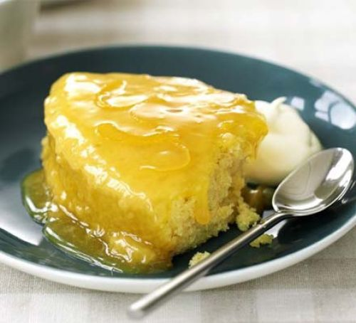

Citroen cakejes
Deze luchtige citroen cakejes zijn lekker na een stevige maaltijd.
Ingrediënten
- 1 ei
- 1 citroen
- 1 pak melk
- 2 tenen knoflook
- boter
- zout
- bloem
- suiker
Bereidingswijze
- Voeg het eigeel, citroenrasp, boter en zout toe in een pan.
- voeg suiker en bloem toe totdat het vloeiend is/
- in een andere pan, klop het eiwit op tot het wit en schuimig is.
- voeg het eiwit toe zodat het lekker luchtig wordt
- Voeg de vloeistof toe in een paar bakvormen
- doe het in de oven voor 45 minuten

Tip je kan voor de variatie wat bosbessen toevoegen
klik hier voor het voorgerecht
klik hier voor het hoofdgerecht